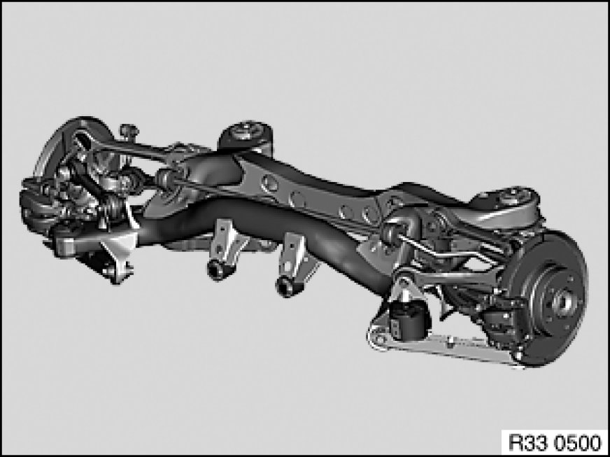
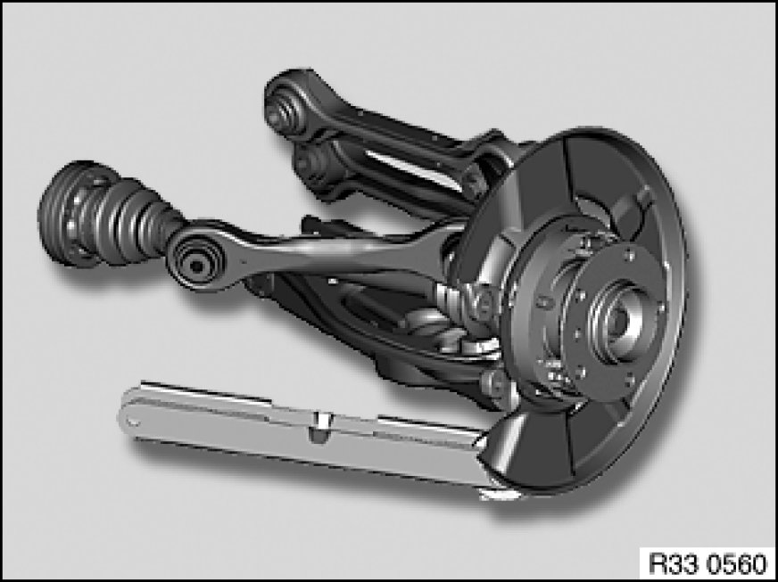
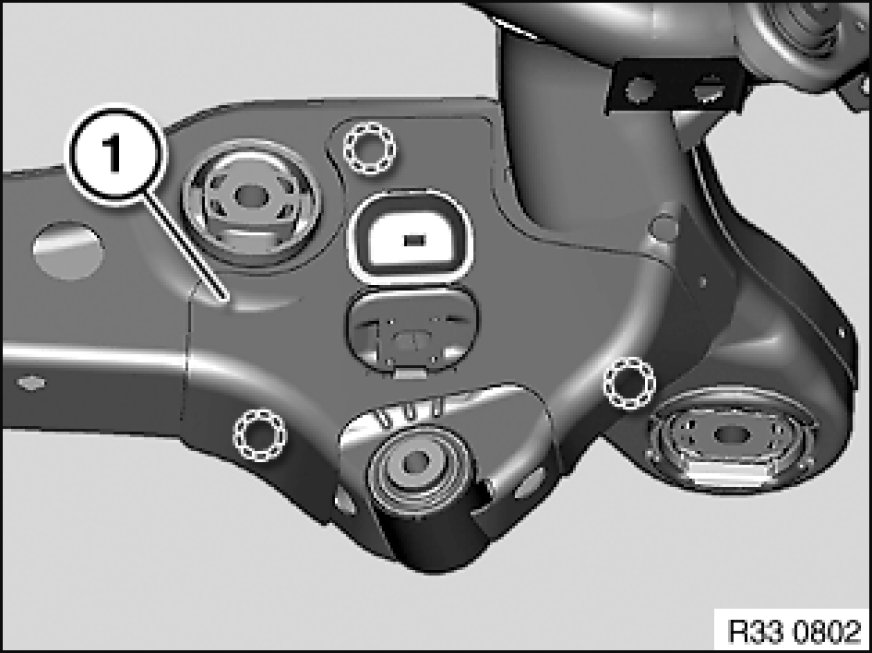

33 31 011 Replacing Rear Axle Carrier
33 31 011 - Replacing rear axle carrier

Warning!
Danger of injury!
Failure to comply with the following instructions may result in the vehicle slipping off the lifting platform and critically injuring other persons.
Read and observe the information on permissible load distribution in the lifting platform operating instructions.
Load the luggage compartment with a minimum of 100 kg before lowering/removing the rear axle carrier.
When supporting components, make sure that
- the vehicle can no longer be raised or lowered
- the vehicle does not lift off the locating plates on the lifting platform

Necessary preliminary tasks:
- Remove rear differential 33 10 010 Removing And Installing/Replacing Rear Differential
- Remove complete rear axle carrier [1][2][3]33 31 000 Removing and Installing Complete Rear Axle Support

If necessary, remove both brake calipers 34 21 745 Removing and Installing or Replacing Rear Left or Right Brake Caliper (Teves) with brake pad sensor (disconnect brake hose from brake line).
Remove both brake discs 34 21 320 Removing and Installing/Renewing Both Brake Discs.
Remove both brake lines from rear axle carrier.
Remove stabilizer bar 33 55 000 Removing and Installing/Replacing Rear Anti-Roll Bar (remove stabilizer links from wheel carrier).
Remove ride-height sensor with holder from rear axle carrier 37 14 512 Replacing Rear Ride-Height Sensor.
E93 except M3: Remove vibration damper (variant D).

Remove both camber arms on rear axle carrier 33 32 190 Removing and Installing/Replacing Left Or Right Camber Arm.
Remove both toe arms on rear axle carrier 33 32 180 Removing and Installing/Replacing Left or Right Toe Arm.
Remove both trailing arms on rear axle carrier 33 32 021 Replacing Left or Right Trailing Arm.
Remove both guide arms on rear axle carrier 33 32 091 Replacing A Control Arm.
Remove both control arms on rear axle carrier 33 32 071 Replacing an Upper Wishbone.
Remove both wheel carriers with output shaft and all arms from rear axle carrier.

If necessary, unclip stoneguard (1) on left and right in marked areas and remove.
Installation Note:
Replace damaged stoneguard.
After installation:
- Bleed braking system 34 00 050 Bleeding Brake System With DSC
- Adjust handbrake Adjustments if the setting of the adjustment unit was changed during disengagement and engagement of the handbrake Bowden cables
- Perform chassis alignment check